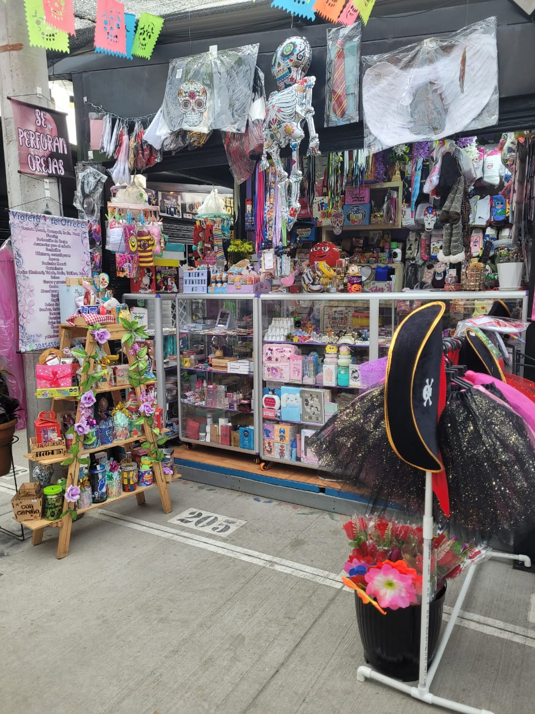

Sobre Nosotros
En el mundo de la moda y la comodidad, Violeta se destaca como un referente en la venta de medias y accesorios. Con una amplia gama de productos, no solo se enfoca en la funcionalidad, sino que también pone un fuerte énfasis en el estilo y la calidad.
¿Qué Ofrecemos?
Materiales Premium: Las medias están fabricadas con fibras de alta calidad que aseguran un ajuste perfecto y una larga vida útil.
Perforación de Orejas Nuestras perforaciones son realizadas por expertos en un entorno seguro. Utilizamos equipos esterilizados y joyas de calidad para que tu piel brille.
Compromiso con el Cliente
Violeta no solo se centra en la calidad de sus productos, sino también en la experiencia del cliente. Su equipo está siempre disponible para brindar asesoramiento y ayudar a los clientes a encontrar exactamente lo que buscan. Ya sea que necesites un par de medias para el día a día o accesorios elegantes para una ocasión especial, Violeta tiene todo lo que necesitas para lucir y sentirte bien.
¿Dónde Estamos Ubicados?
Nos encontramos en la Galería Comercial de Ciudad Verde, Carrera 32 # 15-154, local 10 Zona 6, Soacha, donde podrás explorar nuestra selección de productos y recibir consejos de nuestro equipo experto.
Contáctanos
Teléfono: +57 312 230 4353